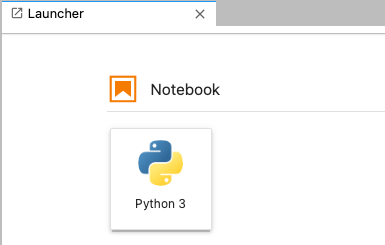
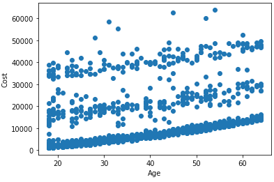
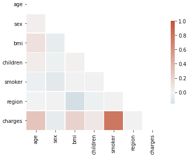
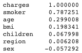
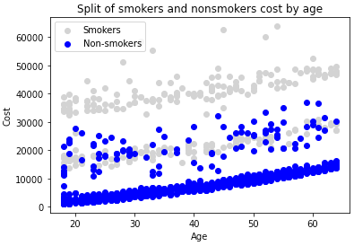
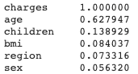
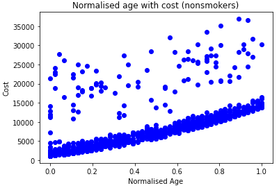
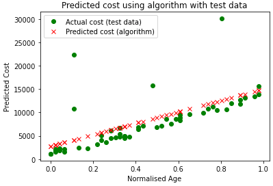
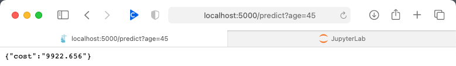

Creating a Cost of Care prediction with TensorFlow
I speak to a lot of people about AI. About the possibilities for healthcare, the limitations, the tools, and how the Cloud providers help us quickly build models. The conversation usually goes something like this.
Hey, I’ve got a cool idea, we should use AI to look for INSERT FUNKY CLINICAL INSIGHT.
Great idea, have you got some data we can use to create a model?
Sure! I know at guy at INSERT FUNKY BUSINESS with some data we can borrow.
What format is the data in? Is it AI-ready?
Eh, what? I’m sure we can just build a model with it.
There’s that word again. Just. The single word that glosses over reality, and simplifies the World. Just. I decided to explore what it takes to build, train and publish a simple AI model from some fairly raw data. In this 5 minute video, I explore how to create a simple ‘cost of care’ prediction model and gain experience with TensorFlow, Google’s open source software library for machine learning with particular focus on training of deep neural networks. I decided to explore the steps that it takes to go from zero to a fully trained published model. In this 5 minute video I’ll show you the steps I had to take to create a blueprint for further investigation.
Ingredients
- Docker (I’m using version 3.0.3), but any recent version should be fine
- Jupyter Notebooks for Python coding
- Scikit-Learn for data normalization
- Matplotlib and Seaborn for visualisation
- TensorFlow for linear regression machine learning algorithm
- Flask for publishing the API.
These libraries will all be installed into the Docker container, which will be your local development environment. You can watch the video below to follow along with the steps.
We will build our model in four simple steps:
- Step 1 - Build a TensorFlow sandpit environment
- Step 2 - Setup our Jupyter notebook
- Step 3 - Build and train our machine learning model using linear regression
- Step 4 - We will publish our prediction model through an API using Flask
Requirements and using the code from GitHub
The only thing you’ll need installed is Docker, and code can be downloaded from GitHub. On GitHub you’ll see a number of helper commands to help things run smoothly.
- build contains the command to build the Docker container from the Dockerfile.
- run contains the commands to run our container, and also display the logs.
- cleanup will stop and delete the Docker container.
- logs will show the log files of the running container.
You can copy the contents of GitHub to your local machine by running the git command.
git clone https://github.com/fiveminutecloud/fmctensorflow.git
Step 1 - Create the sandpit environment
Now, there are a few ways you can get a sandpit environment. You can use something like AWS SageMaker, Azure Machine Learning, or Google Colab, but for this example we’ll quickly make our own local environment. This helps us understand a little more about what’s going on, but is also means you can use data sets which you might not be comfortable sharing on the Cloud.
Our Dockerfile uses the standard python 3.7 base image from DockerHub, on which we layer Jupyter Notebooks, the TensorFlow machine learning libraries and the Flask libraries to publish our API.
Dockerfile
FROM python:3.7-slim
RUN apt-get update
RUN pip3 install scikit-learn==0.23.2
RUN pip3 install jupyterlab==2.2.9
RUN pip3 install matplotlib==3.3.3
RUN pip3 install seaborn==0.11.0
RUN pip3 install numpy==1.18.5
RUN pip3 install tensorflow==2.3.1
RUN pip3 install flask==1.1.2
CMD ["jupyter-lab", "--ip=0.0.0.0", "--allow-root", "--notebook-dir=/notebooks"]
Build the Docker container using the command
docker build -t fmctensorflow .
Step 2 - Setup our Jupyter Notebook
Now you have a container image, you run it with the following command. This command creates an instance of the container, and opens two ports on the container. Port 8888 is opened so you can access Jupyter Notebooks through your web browser, and port 5000 is opened for the API which we’ll create shortly.
docker run -d -v $(pwd)/notebooks:/notebooks --name fmctensorflow -p 8888:8888 -p 5000:5000 fmctensorflow:latest
docker logs -f fmctensorflow
Within the logs, you should see a line which looks something like the line below. It contains the access token for the running instance of Jupyter, so you need that. Simply copy the whole line into your browser, to access the Notebook. I recommend using the last link which starts http://127.0.0.1.
To access the notebook, open this file in a browser:
file:///root/.local/share/jupyter/runtime/nbserver-1-open.html
Or copy and paste one of these URLs:
http://046ef7394882:8888/?token=9e976aecfb63ee81434e0272b4e996c130833ee891c91434e0272b4eaea6304e976aea8
or http://127.0.0.1:8888/?token=e976aecfb63ee81434e0272b4e996c130833ee891c91434e0272b4eaea6304e976aea8
Now in your web browser, you should see Launcher. Click the Python3 logo to create a new Notebook. You can right-click the file created on the left to rename it.

Step 3 - Build and train our model
You can view the actual Notebook here, but I’m going to summarize the eleven key steps below.
a. Import the libraries
Here we import the libraries that were layered into the Docker container during step 1. You’ll notice we’re using some libraries which we didn’t explicitly include (eg. Pandas), but we can still use them because they are part of the base Python 3.7 container.
b. Retrieve the data set for training
The dataset we use for training is a public dataset from Kaggle with a small sample of USA population medical insurance costs. It has 1338 records, with columns as follows:
| Feature | Description | Type |
|---|---|---|
| Age | Patient age | Numeric |
| Sex | Patient sex | Text |
| BMI | Patient body-mass index | Numeric |
| Children | Number of children | Numeric |
| Smoker | Is the patient a smoker? | Text |
| Region | Patient’s home region | Text |
| Charges | Insurance costs | Numeric |
c. Visualise and explore the data with Matplotlib
We are interested to understand the relationship between age and insurance costs. The following chart shows the distribution. Here we can see at least three linear relationships, so in the next step we’d like to understand the features that influence the insurance costs.

d. Map the textual values to numerical values
In order to understand the features that influence insurance costs, we need to delve deeper into the data. We’d like to look at creating a correlation matrix to show how the costs change, as the features change. For example, do insurance costs go up as BMI increases? How do the costs vary by region?
In order to do this analysis, we use a Correlation function, but it only works with numeric data. Therefore, we create three mapping functions to map Sex, Smoker and Region to numeric values, so we configure the following mappings.
| Feature | Text Values | Numeric Values |
|---|---|---|
| Sex | male, female, undefined | 0, 1, -1 |
| Smoker | no, yes, undefined | 0, 1, -1 |
| Region | southwest,southeast,northwest,northeast, undefined | 1, 2, 3, 4, 0 |
e. Look at the correlation between data items with Pandas and SeaBorn
We use Pandas to first create the Correlation matrix, and then we use SeaBorn to visualise the matrix to see the hotspots. From the charts below, we see the factors influencing the insurance costs are smoker, and then age.
|  |  |
f. Separate the Smokers from the Nonsmokers
Since Smokers is a ‘yes/no’ value, in the next step we split the source data into Smokers and Nonsmokers so we can see the different trends. In the image below we can see the split of smokers and nonsmokers. We can see at least 3 linear relationships. We can see two for smokers (in grey), and a good linear relationship for nonsmokers (in blue) but with a sizable set of anomalies. So, for the rest of this adventure we’ll focus on the nonsmokers only.

g. Look at the correlation between features for only Nonsmokers
Now, we re-run the Correlation function for nonsmokers only, and we discover that age (unsurprisingly!) becomes the most significant factor in insurance charges.

h. Normalize the input values with Scikit-Learn
We now need to prepare the data for training. It is best practice to normalize the input values, and we do this by creating a scaler. The scaler is a function that condenses the input dataset (age) down to a unit range (between 0-1). If you don’t do this, you may find your modeling fit explodes. You don’t need to normalize the output values (costs).

i. Split the data into a training and testing dataset
There is one last thing needed before training the model. In step 3b, I noted we have 1338 records in our data set, of which 1064 are nonsmokers. We want to use most of the data for training the model. But, we also want to hold back some data so we can test the model afterwards and compare the predicted result with the actual result already known. This helps us understand the accuracy of our model. We decide to train the model on 1010 (95%) nonsmokers, and hold back 54 records for testing later.
j. Train the model with TensorFlow
Finally! Eleven steps later, we can train our model with TensorFlow. TensorFlow works by creating models and layers. Models are made up of layers, and layers are the functions containing the mathematical function. The power of TensorFlow allows you to build complex networks with multiple layers leading to very sophisticated prediction models. We will only create one Keras layer. The model fitting process is essentially random. And if you run the fitting process multiple times, you’ll get different results, unless you set the seed for the random number generator. Fitting basically selects a random position, and tests the training data against it. It uses Optimizers to determine the accuracy (or ‘loss’) of the prediction against the known outcome in the training set and adjusts the random position accordingly. It’s like guessing a number between 1 and 100. You guess 50, I say lower. You guess 25, I say higher. Eventually you guess correctly. Sometimes you get lucky and it only takes a few guesses, other times it takes longer. Each guess is called an Epoch, and the more guesses you have the longer it takes, and the better the result. We’re using just 1000 epochs here. We’re only using 1064 records to train our model, and it works just fine locally. But what if you have millions, or billions of records. Well, TensorFlow scales crazy-well, and lots of the cloud providers, but especially Google Cloud AI support TensorFlow at scale. All this work allows us to run just three commands to train our model.
model = tf.keras.Sequential([keras.layers.Dense(units=1, input_shape=[1])])
model.compile(optimizer='sgd', loss='mean_squared_error')
model.fit(x=x_train, y=y_train, epochs=1000,shuffle=False,verbose=0)
We wait a few minutes for the modelling to run, and what do we get for our trouble? We get an in memory model that we can use for predictions. But first, let’s evaluate our model against the 54 records we held back in step 3i. We need to check the model makes reasonable predictions.
k. Evaluate the model with the remaining data set
In this step we evaluate the model against the 54 records we held back. We already know the insurance costs for these patients, so let’s see what the new prediction model gives. The green-dots show the actual costs recorded in the source data, but the red-crosses show the predicted costs. And it’s not too bad! Clearly, the test data has some anomalies, but remember in step 3g we choose to only focus on the patients age. We haven’t accounted for other features such as number of children, or BMI which may explain these deviations.
You may also notice that the age axis is still normalized because our model was trained on normalized age data. In the final step 4, you’ll see how we publish the model as an API, and use the Scaler from step 3h to normalize the age for which we want the insurance cost prediction.

Step 4 - Deploy the model as an API with Flask
We use the in-memory model created above, and create a web API around it so it can be used by mobile and web apps. We use Flask to create the API infrastructure, with one simple GET endpoint predict, that takes age as a single input value. When the container was started above in step 2, we opened port 5000 so we can access the Flask API though our web browser. We can now access the insurance cost predictor through one simple endpoint.
http://localhost:5000/predict?age=45
Remember, I said above the model works on a normalized age value, so we simply use the same scaler from step 3h we created before to scale the age.
scaler_input_array = np.array([[age,0]])
scaled_age = mm_scaler.transform(scaler_input_array)[0][0]
cost_prediction = model.predict([scaled_age])[0][0]
We then pass the normalized age to the model predictor and return the insurance cost in the HTTP response.

If you run into problems
I like testing ideas in a isolated container because it provides a nice clean working space with known libraries. Also, if you run into difficulties, you can simply hit reset and start again from a known state. The container can be restarted by running the cleanup commands:
docker kill fmctensorflow
docker rm fmctensorflow
You can then restart your container using the commands in step 2.
If you have any other difficulties, please comment below.